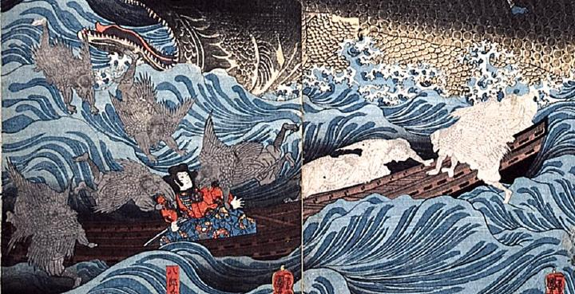

難破した源為朝を助ける烏天狗たち。崇徳上皇の眷属である。
著作者：歌川国芳／出典：親書誌：M80_naprstek_0018：讃岐院眷属をして為朝をすくふ図；サヌキノインケンゾクヲシテタメトモヲスクウズ／日付：2011／資源識別子：M80_naprstek_0018_0002_0000
Copyright (c)2010- International Research Center for Japanese Studies, Kyoto, Japan. All rights reserved.